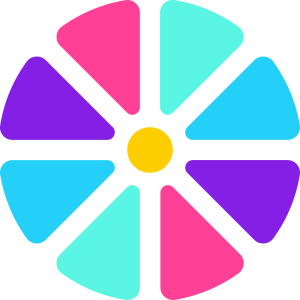

Skip to content

Mao Lihang's blog
Search
K
Main Navigation
blog
大前端修炼
typescript
vue系列
react系列
uniapp
微信小程序
微前端
webpack
nodejs
版本管理
设计模式
项目预览
Appearance
桃李春风一杯酒
江湖夜雨十年灯
终不似，少年游...
立即前往 →
🍷
循循渐进
我酒量很糟,可那爱吟诗的朋友也好不了多少
🚀
勇往直前
沸然如巨兽吞天噬地，安然于无声揽苍穹入怀。
💡
学以致用
纵情山河万里，肆意九州五岳。